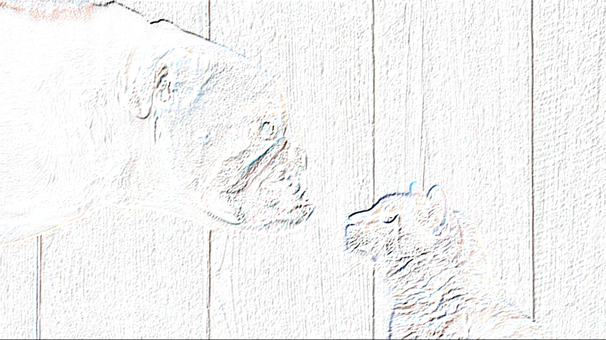
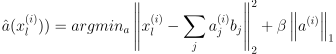
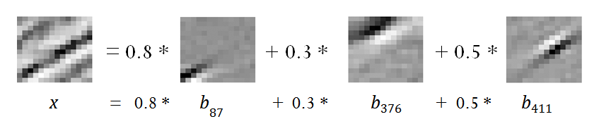

Self-taught Learning:
Transfer Learning from Unlabeled Data
Richard Wen
rwen@ryerson.ca
April 7, 2017
Presented as an Article Summary for Course CP8305
Instructed by Dr. Cherie Ding
Outline
- Introduction
- Methods
- Results
- Discussion and Conclusion
Introduction
Learning

What We See
What The Computer Sees

Higher Level Features
Why?
- Labeled data is expensive
- Abundance of unlabeled data
- Less restrictive data requirements
Methods
Two Stages
- Learn representation with unlabeled data
- Apply to labeled data for classification
Labeled Training Data
A set of m training examples with:
- x as n-dimension feature vectors
- y as corresponding labels {1 .. C}
- l indicating a labeled example
Unlabeled Training Data
A set of k training examples with:
- x as n-dimension feature vectors
- u indicating an unlabeled example
Learning Bases (Basic Elements)
Optimize aj weights and bj bases to:
- Reconstruct xu as weighted linear combo of bases
- Encourage aj to be sparse (mostly zero)
Learning Features
Using bj, compute sparse features from labeled data as input to supervised algorithms
 Raina et al. (2007)Sparse Features Example
 Raina et al. (2007)Results
Classification Experiments
- Principal Component Analysis (PCA) vs Raw vs Sparse Coding (SC) Features
- Support Vector Machine (SVM)
- Gaussian Discriminant Analysis (GDA)
Handwritten Digits and English Characters
- Improvements when SC used with Raw for characters
- SC did not perform as well alone for characters
- SC generally performed better for digits
- Improvements ranged from ~1-7%
Reuters Webpages and Articles
- SC generally performed well for webpages and articles
- Improvements ranged from ~8-21%
Kernels (Similarity Functions)
- Compared against linear, polynomials, Radial Basis Function (RBF)
- Outperforms standard kernel choices above
- Improvements ranged from ~6-13%
Discussion and Conclusion
Discussion
- Can be applied to different domains
- Can have more basis vectors bj than n-dimensions
- Unlabeled data must still have some structure
- Other algorithms can be modified for self-taught learning
Conclusion
- Find higher level representations of patterns
- Use of inexpensive unlabeled data
- Self-taught learning as a machine learning framework
References
- Raina, R., Battle, A., Lee, H., Packer, B., & Ng, A. Y. (2007). Self-taught learning. Proceedings of the 24th international conference on Machine learning - ICML '07. doi:10.1145/1273496.1273592